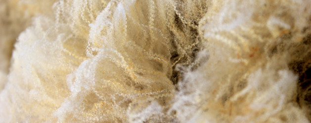
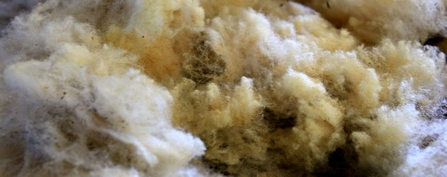
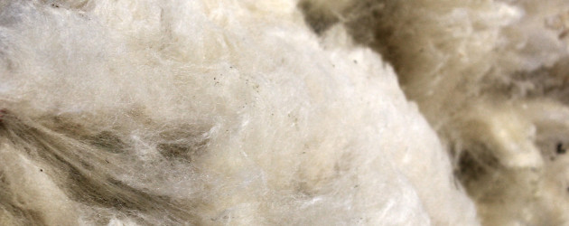
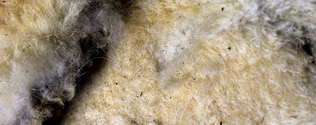
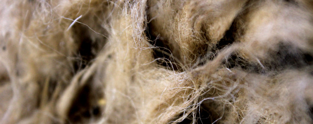
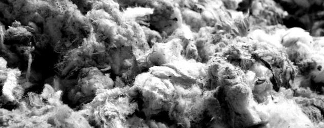
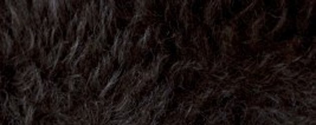
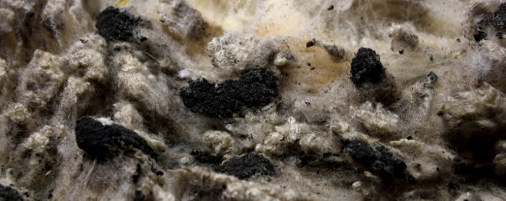

Nuestras lanas
Nuestras lanas se encuentran en todo momento bajo condiciones adecuadas de higiene y humedad. Los análisis certificados realizados por la WTAE revelan un rendimiento aproximado del 50%, con un porcentaje de materia vegetal siempre inferior al 1%.
Lana de Tipo 2
Lana grasienta de entre 22 y 23 micras, de color blanco y una longitud de 50-60mm. Representa la gran mayoría de nuestras lanas (70% aproximadamente).

Lana de Tipo 3
Lana de entre 24 y 25 micras.

Lana de Tipo 4
Lana de entre 25 y 27 micras.

Lana de Tipo 5
Lana con pelo muerto.

Lana de Tipo 6/7
También conocida como "garras". Calibre muy grueso.

Segundas
Lana corta de cordero y barriguera del vellón.

Lanas grises o lanas negras
Lanas de color.

Lanas con marcas de pez
Lanas con restos del petróleo para marcar las ovejas
